library(qsbsdata)
library(MASS)QSBS Practical 3 — Regression: generalised linear models Answers
Introduction
In the previous practical we fitted a distribution to a sample: one set of parameter values for the whole data set. In this practical a parameter of the distribution is allowed to depend on a predictor variable. That is what a regression is (Dormann, Chap. 7 and 8).
The data for this practical come from the qsbsdata package; the negative binomial GLM and dose.p() come from MASS.
Exercise 1
The RIKZdat data set contains the number of macro-fauna species (Richness) found in 45 samples on nine Dutch beaches, together with the height of each sampling station relative to mean tidal level (NAP, in m). Stations with a high NAP are flooded less often; we expect fewer species there.
- Plot
RichnessagainstNAP. Which distribution is the natural first candidate for the response variable, and which link function goes with it (Dormann, Table 7.1)? Write down the model in the notation \(y \sim \mathrm{Dist}(\ldots)\). - Fit the model with
glm()and look atsummary(). Report the two coefficients with their standard errors. On which scale are these numbers? Is the effect ofNAPsignificant? - Back-transform the intercept. What does the resulting number mean in words? Then calculate, from the coefficients and by hand, the expected species richness at
NAP = -1,0and1m and check withpredict(..., type = "response"). By what factor does the expected richness change for every metre increase inNAP? - Calculate the deviance explained by the model from the null and residual deviance in the output. Compare the ratio residual deviance / residual degrees of freedom with 1 and comment.
- Draw the fitted curve with its 95 % confidence band on top of the data: make a sequence of 100
NAPvalues, usepredict(..., se.fit = TRUE), add \(\pm 2\) standard errors on the link scale and back-transform withexp()before drawing. Explain why the band is not symmetric around the curve. - Make the same plot with a logarithmic y-axis (
log = "y"). What happens to the curve and to the band, and why (Dormann, Fig. 7.5)? Which of the two plots would you show in a report, and which to a statistician?
Answer
a. Always plot first:
plot(Richness ~ NAP, data = RIKZdat, pch = 16, las = 1,
xlab = "NAP (m)", ylab = "number of species")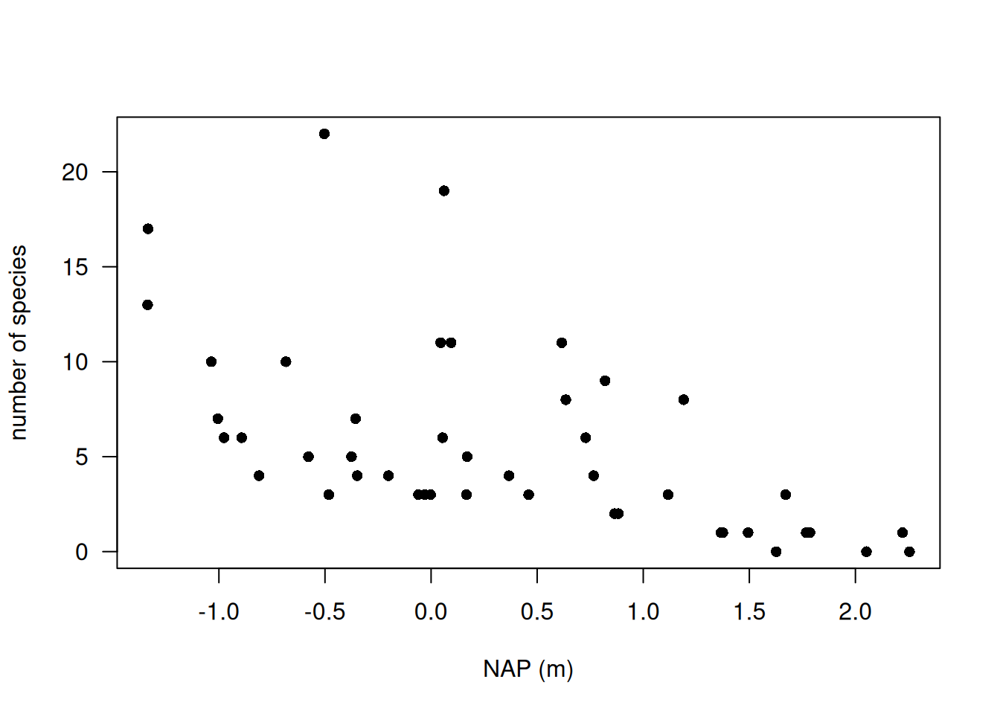
Richness is a count (0, 1, 2, …), so the natural first candidate is the Poisson distribution, whose canonical link is the log (Table 7.1). The model is
\[\mathrm{Richness} \sim \mathrm{Pois}\big(\lambda = e^{\,\beta_0 + \beta_1 \cdot \mathrm{NAP}}\big), \qquad \text{i.e.}\quad \ln \lambda = \beta_0 + \beta_1 \cdot \mathrm{NAP}.\]
The log link guarantees that the expected count can never become negative, however large NAP gets.
b. Fitting:
fm1 <- glm(Richness ~ NAP, data = RIKZdat, family = poisson)
summary(fm1)
Call:
glm(formula = Richness ~ NAP, family = poisson, data = RIKZdat)
Coefficients:
Estimate Std. Error z value Pr(>|z|)
(Intercept) 1.79100 0.06329 28.297 < 2e-16 ***
NAP -0.55597 0.07163 -7.762 8.39e-15 ***
---
Signif. codes: 0 '***' 0.001 '**' 0.01 '*' 0.05 '.' 0.1 ' ' 1
(Dispersion parameter for poisson family taken to be 1)
Null deviance: 179.75 on 44 degrees of freedom
Residual deviance: 113.18 on 43 degrees of freedom
AIC: 259.18
Number of Fisher Scoring iterations: 5The intercept is 1.791 (SE 0.063) and the slope for NAP is -0.556 (SE 0.072). Both numbers are on the link scale — they are coefficients of a straight line for \(\ln \lambda\), not for \(\lambda\). The slope differs from zero by almost eight standard errors (\(z = -7.8\), \(p < 10^{-14}\)): richness decreases significantly with height above mean tidal level.
c. Back-transforming:
exp(coef(fm1))(Intercept) NAP
5.9954272 0.5735136 \(e^{\beta_0} =\) 6 is the expected number of species at NAP = 0, i.e. at a station exactly at mean tidal level. Predictions by hand and with predict():
NAPvals <- c(-1, 0, 1)
by_hand <- exp(coef(fm1)[1] + coef(fm1)[2] * NAPvals)
with_predict <- predict(fm1, newdata = data.frame(NAP = NAPvals), type = "response")
rbind(NAP = NAPvals, by_hand, with_predict) 1 2 3
NAP -1.00000 0.000000 1.000000
by_hand 10.45385 5.995427 3.438459
with_predict 10.45385 5.995427 3.438459Every metre increase in NAP multiplies the expected richness by \(e^{\beta_1} =\) 0.574, i.e. the richness drops by about 43 % per metre. On the link scale the effect is additive (−0.56 per metre); on the response scale it is multiplicative. That is what a log link does.
d. Deviance explained and dispersion:
c(deviance_explained = (fm1$null.deviance - deviance(fm1)) / fm1$null.deviance,
dispersion = deviance(fm1) / df.residual(fm1))deviance_explained dispersion
0.3703455 2.6321450 The model explains about 37 % of the deviance. The residual deviance per degree of freedom is 2.6, well above the value of 1 that a Poisson distribution implies (Dormann, Sect. 7.3.2, point 3). The counts are overdispersed: there is more variation among stations than the Poisson distribution allows for, presumably because stations on the same beach are similar and because other variables (exposure, grain size, …) also matter. The consequence is that the standard errors in the summary are too small. In this case the effect is so strong that the conclusion does not change, but in general one would move to a negative binomial model (see Exercise 2).
e. The confidence band:
NAPnew <- seq(min(RIKZdat$NAP), max(RIKZdat$NAP), length = 100)
pr <- predict(fm1, newdata = data.frame(NAP = NAPnew), se.fit = TRUE)
plot(Richness ~ NAP, data = RIKZdat, pch = 16, las = 1,
xlab = "NAP (m)", ylab = "number of species")
lines(NAPnew, exp(pr$fit), lwd = 2)
lines(NAPnew, exp(pr$fit + 2 * pr$se.fit), lty = 2)
lines(NAPnew, exp(pr$fit - 2 * pr$se.fit), lty = 2)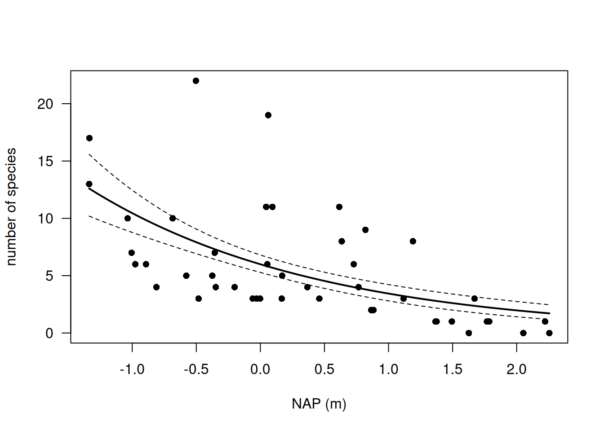
predict() returns fitted values and standard errors on the link scale, where the estimates are (approximately) normally distributed and \(\pm 2\) SE is a symmetric interval. Back-transforming with exp() stretches the upper half of the interval more than the lower half, so the band on the response scale is asymmetric — wider above the curve than below. The same happened to the confidence intervals of the hyena parameters in Dormann, Sect. 8.4.
f. Logarithmic y-axis:
plot(Richness ~ NAP, data = RIKZdat, pch = 16, las = 1, log = "y",
xlab = "NAP (m)", ylab = "number of species (log axis)")
lines(NAPnew, exp(pr$fit), lwd = 2)
lines(NAPnew, exp(pr$fit + 2 * pr$se.fit), lty = 2)
lines(NAPnew, exp(pr$fit - 2 * pr$se.fit), lty = 2)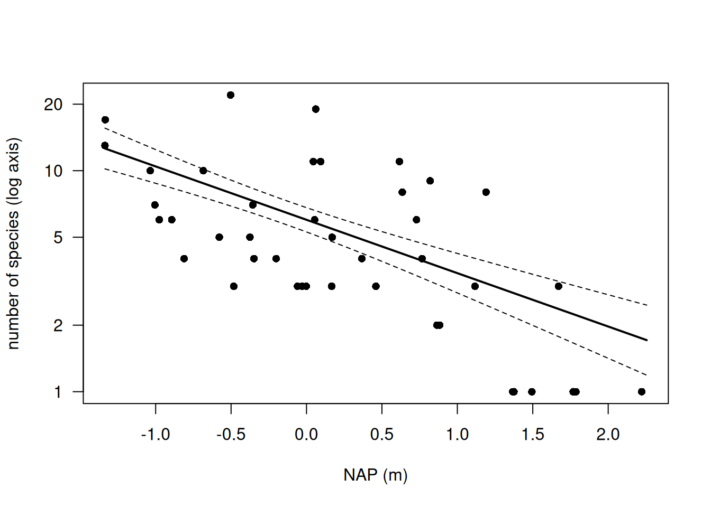
On a log axis the exponential curve becomes a straight line and the band becomes symmetric, because a logarithmic axis is the link scale: we are now looking at \(\ln \lambda = \beta_0 + \beta_1 \mathrm{NAP}\) directly. Note that the station with 0 species disappears, because \(\log(0)\) is not defined. The response-scale plot (e) is the one to show in a report: it shows the data as they were collected. The link-scale plot is what a statistician would want, because it shows the form of the model — a straight line — and makes it easy to judge whether a straight line on the link scale is adequate.
Exercise 2
The predictor can also be a factor. In slugs, the number of slugs was counted under 40 tiles in each of two grasslands (field: Nursery and Rookery).
- Make a boxplot or a table of the counts per field, and calculate the mean and the variance per field. What do you expect a Poisson GLM to give as coefficients, before you fit anything?
- Fit
glm(slugs ~ field, family = poisson). Which field is the reference level, and why that one? Show thatexp()of the intercept equals the mean of the reference field, and thatexp()of the sum of the two coefficients equals the mean of the other field. What doesexp()of thefieldRookerycoefficient on its own represent? - Look at
model.matrix(~ field, data = slugs). Explain how the factor with two levels has become a column of 0s and 1s, and where the intercept lives in this matrix (Dormann, Sect. 7.2.1). - Use
relevel()to make Rookery the reference level and refit. Which numbers in the output change, and which stay the same (fitted means, deviances, AIC, p-value)? - Compare the residual deviance with the residual degrees of freedom. Are the counts overdispersed? Also compare, for each field, the variance with the mean.
- Refit the model with
glm.nb(). Report the estimate of the clumping parameter \(\theta\) and compare the two models with AIC. What happened to the standard error and the p-value of the field effect, and why (Dormann, Sect. 8.3)? Which model would you report, and is the difference between the fields significant?
Answer
a. A look at the data:
slugs$field <- factor(slugs$field)
table(slugs$field, slugs$slugs)
0 1 2 3 4 5 6 7 8 9 10
Nursery 25 5 2 2 2 1 1 1 0 0 1
Rookery 9 9 8 5 2 4 1 0 1 1 0boxplot(slugs ~ field, data = slugs, las = 1, ylab = "slugs per tile")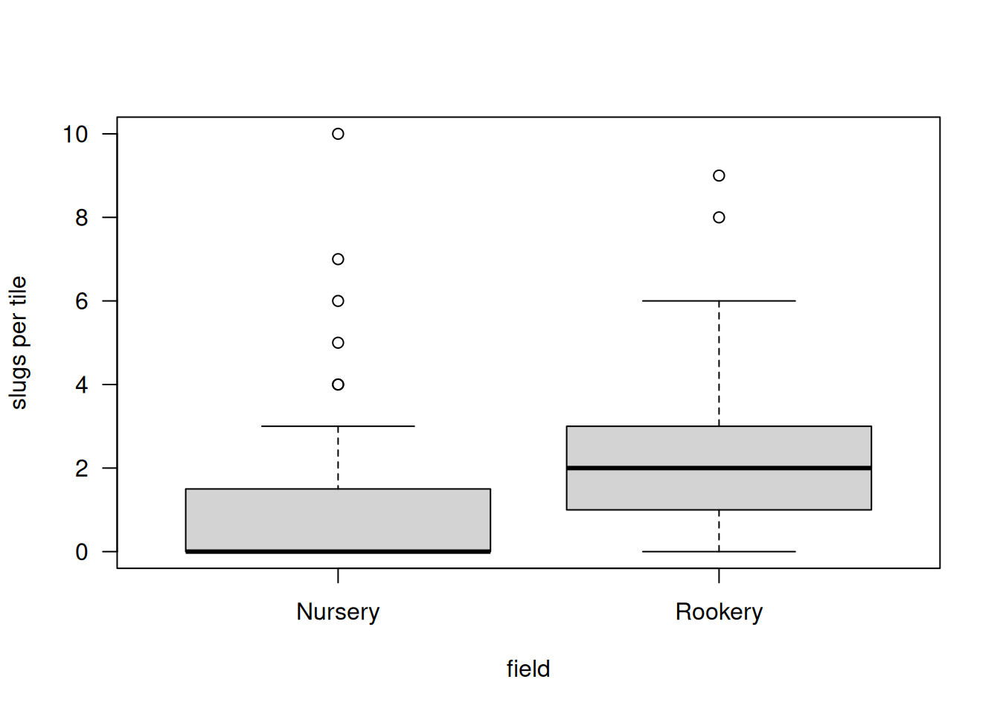
rbind(mean = tapply(slugs$slugs, slugs$field, mean),
variance = tapply(slugs$slugs, slugs$field, var)) Nursery Rookery
mean 1.275000 2.275000
variance 5.332692 4.922436A Poisson GLM with a two-level factor fits one mean per field, on the log scale. So we expect the intercept to be \(\ln(1.275) =\) 0.243 (the log of the Nursery mean) and the second coefficient to be \(\ln(2.275) - \ln(1.275) = \ln(2.275/1.275) =\) 0.579.
b. Fitting:
fm2 <- glm(slugs ~ field, data = slugs, family = poisson)
summary(fm2)
Call:
glm(formula = slugs ~ field, family = poisson, data = slugs)
Coefficients:
Estimate Std. Error z value Pr(>|z|)
(Intercept) 0.2429 0.1400 1.735 0.082744 .
fieldRookery 0.5790 0.1749 3.310 0.000932 ***
---
Signif. codes: 0 '***' 0.001 '**' 0.01 '*' 0.05 '.' 0.1 ' ' 1
(Dispersion parameter for poisson family taken to be 1)
Null deviance: 224.86 on 79 degrees of freedom
Residual deviance: 213.44 on 78 degrees of freedom
AIC: 346.26
Number of Fisher Scoring iterations: 6Nursery is the reference level simply because it comes first alphabetically (levels(slugs$field)). Back-transforming:
b <- coef(fm2)
c(exp_intercept = exp(b[1]),
exp_sum = exp(b[1] + b[2]),
exp_slope = exp(b[2]))exp_intercept.(Intercept) exp_sum.(Intercept) exp_slope.fieldRookery
1.275000 2.275000 1.784314 tapply(slugs$slugs, slugs$field, mean)Nursery Rookery
1.275 2.275 \(e^{\beta_0} = 1.275\) is the mean of Nursery, \(e^{\beta_0 + \beta_1} = 2.275\) is the mean of Rookery. \(e^{\beta_1} = 1.78\) on its own is the ratio of the two means: Rookery has 1.78 times as many slugs per tile as Nursery. With a log link, a difference on the link scale is a ratio on the response scale.
c. The design matrix:
head(model.matrix(~ field, data = slugs)) (Intercept) fieldRookery
1 1 0
2 1 0
3 1 0
4 1 0
5 1 0
6 1 0tail(model.matrix(~ field, data = slugs)) (Intercept) fieldRookery
75 1 1
76 1 1
77 1 1
78 1 1
79 1 1
80 1 1R has replaced the factor by a dummy variable fieldRookery that is 0 for Nursery tiles and 1 for Rookery tiles. The intercept is the column of ones. The regression \(\ln \lambda = \beta_0 \cdot 1 + \beta_1 \cdot \mathrm{fieldRookery}\) therefore gives \(\ln\lambda = \beta_0\) for Nursery and \(\beta_0 + \beta_1\) for Rookery. A factor with two levels needs one dummy, with \(k\) levels it needs \(k - 1\) dummies (Dormann, Sect. 7.2.2).
d. Changing the reference level:
slugs$field2 <- relevel(slugs$field, ref = "Rookery")
fm2b <- glm(slugs ~ field2, data = slugs, family = poisson)
coef(summary(fm2b)) Estimate Std. Error z value Pr(>|z|)
(Intercept) 0.8219801 0.1048285 7.841190 4.462967e-15
field2Nursery -0.5790339 0.1749195 -3.310288 9.319987e-04c(AIC = AIC(fm2b), residual_deviance = deviance(fm2b)) AIC residual_deviance
346.2551 213.4378 The intercept is now the log of the Rookery mean and the slope is \(-0.579\): the same difference with the opposite sign. The fitted means, the null and residual deviance, the AIC and the p-value of the field effect are all unchanged. The reference level is a matter of presentation; the model is the same.
e. Overdispersion:
deviance(fm2) / df.residual(fm2)[1] 2.736382The residual deviance per degree of freedom is 2.7, far above 1. Within each field the variance (5.3 and 4.9) is more than twice the mean (1.3 and 2.3) — the counts are strongly overdispersed relative to a Poisson distribution: many tiles have no slugs, a few have many.
f. Negative binomial:
fm2nb <- glm.nb(slugs ~ field, data = slugs)
summary(fm2nb)
Call:
glm.nb(formula = slugs ~ field, data = slugs, init.theta = 0.7859313363,
link = log)
Coefficients:
Estimate Std. Error z value Pr(>|z|)
(Intercept) 0.2429 0.2268 1.071 0.2840
fieldRookery 0.5790 0.3069 1.886 0.0592 .
---
Signif. codes: 0 '***' 0.001 '**' 0.01 '*' 0.05 '.' 0.1 ' ' 1
(Dispersion parameter for Negative Binomial(0.7859) family taken to be 1)
Null deviance: 86.818 on 79 degrees of freedom
Residual deviance: 83.256 on 78 degrees of freedom
AIC: 291.35
Number of Fisher Scoring iterations: 1
Theta: 0.786
Std. Err.: 0.224
2 x log-likelihood: -285.350 c(theta = fm2nb$theta, AIC_poisson = AIC(fm2), AIC_negbin = AIC(fm2nb)) theta AIC_poisson AIC_negbin
0.7859313 346.2550580 291.3499640 The clumping parameter is \(\theta \approx 0.79\); a small \(\theta\) means strong clumping. The AIC drops by about 55 units, so the negative binomial model is vastly better. The coefficients are identical to the Poisson ones (both models fit the same two means), but the standard error of the field effect has grown from 0.17 to 0.31 and the p-value from 0.001 to 0.06. The Poisson model assumed a variance equal to the mean, and so under-estimated the uncertainty; the negative binomial model estimates the extra variance from the data. We would report the negative binomial model, and with it the difference between the fields is not significant at the 5 % level. This is a typical case: ignoring overdispersion makes effects look more significant than they are.
Exercise 3
In wells, groundwater samples from n wells were taken in each of 20 areas on Long Island (New York); in y of the wells the solvent TCE was detected. The areas differ in median nitrate concentration (nitrate, mg/l) and in whether the area is sewered (sewer).
- Plot the proportion of contaminated wells
y/nagainstnitrate. Why is a proportion not a good response variable for agaussianGLM, and what should we use instead (Dormann, Sect. 8.1, the bioassay example)? - Build the two-column response
cbind(y, n - y)and fit a binomial GLM withnitrateas predictor. Report the coefficients. Which link function was used? - Back-transform the intercept with
plogis(): what is the fitted probability of contamination in an area with a nitrate concentration of 0 mg/l? What is it at 3 mg/l and at 7 mg/l? Do these calculations by hand from the coefficients and check them withpredict(..., type = "response"). - Draw the fitted curve with a 95 % confidence band on top of the plot from (a). Remember that the standard errors are on the logit scale, so back-transform with
plogis()after adding \(\pm 2\) SE. - Use
dose.p()to estimate the nitrate concentration at which half of the wells are contaminated. Compare this value withrange(wells$nitrate)and explain why you should be reluctant to believe it. - Now fit a binomial GLM with the factor
seweras the only predictor. Back-transform the intercept and the sum of the coefficients to two proportions, and check them against the pooled numbers of contaminated and clean wells in sewered and unsewered areas (aggregate()ortapply()). Compare the p-value of the sewer effect with the p-value ofchisq.test()on the \(2 \times 2\) table of pooled counts (Dormann, Sect. 7.3.2). Are the two answers similar?
Answer
a. The data:
plot(y / n ~ nitrate, data = wells, pch = 16, las = 1, cex = sqrt(n) / 4,
xlab = "nitrate (mg/l)", ylab = "proportion of wells with TCE", ylim = c(0, 0.6))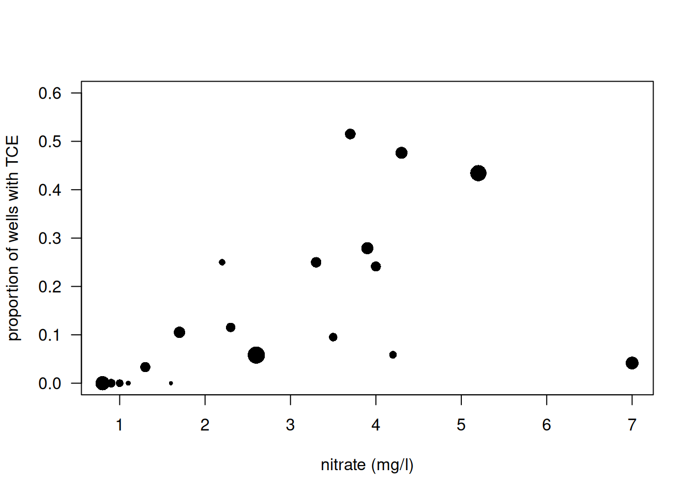
A proportion is confined to the interval \([0, 1]\), a normal distribution is not, so a gaussian GLM could predict negative proportions or proportions above 1. Moreover, a proportion based on 5 wells is much less precise than one based on 86 wells, and a gaussian model treats them as equally informative. The proper description is the binomial distribution: out of n trials, y successes, with a success probability \(p\) that depends on nitrate through the logit link: \(y \sim \mathrm{Binom}(n,\ p = \mathrm{logit}^{-1}(\beta_0 + \beta_1 \cdot \mathrm{nitrate}))\).
b. Fitting:
fm3 <- glm(cbind(y, n - y) ~ nitrate, data = wells, family = binomial)
summary(fm3)
Call:
glm(formula = cbind(y, n - y) ~ nitrate, family = binomial, data = wells)
Coefficients:
Estimate Std. Error z value Pr(>|z|)
(Intercept) -2.71354 0.25042 -10.836 < 2e-16 ***
nitrate 0.34156 0.05928 5.762 8.34e-09 ***
---
Signif. codes: 0 '***' 0.001 '**' 0.01 '*' 0.05 '.' 0.1 ' ' 1
(Dispersion parameter for binomial family taken to be 1)
Null deviance: 146.96 on 19 degrees of freedom
Residual deviance: 112.16 on 18 degrees of freedom
AIC: 161.44
Number of Fisher Scoring iterations: 4The link is the logit (the default for binomial), so the intercept -2.714 and the slope 0.342 are on the log-odds scale. The probability of contamination increases significantly with nitrate (\(z = 5.8\)).
c. Back-transforming with the inverse logit \(p = e^{x}/(1 + e^{x})\), which R calls plogis():
nit <- c(0, 3, 7)
by_hand <- plogis(coef(fm3)[1] + coef(fm3)[2] * nit)
with_predict <- predict(fm3, newdata = data.frame(nitrate = nit), type = "response")
rbind(nitrate = nit, by_hand, with_predict) 1 2 3
nitrate 0.00000000 3.0000000 7.0000000
by_hand 0.06217926 0.1559257 0.4200358
with_predict 0.06217926 0.1559257 0.4200358At 0 mg/l nitrate the fitted probability of contamination is 0.062; at 3 mg/l it is 0.16 and at 7 mg/l 0.42. Note that the intercept refers to 0 mg/l, a concentration slightly below the lowest observed value (0.8 mg/l).
d. Confidence band:
nitnew <- seq(min(wells$nitrate), max(wells$nitrate), length = 100)
pr3 <- predict(fm3, newdata = data.frame(nitrate = nitnew), se.fit = TRUE)
plot(y / n ~ nitrate, data = wells, pch = 16, las = 1, cex = sqrt(n) / 4,
xlab = "nitrate (mg/l)", ylab = "proportion of wells with TCE", ylim = c(0, 0.6))
lines(nitnew, plogis(pr3$fit), lwd = 2)
lines(nitnew, plogis(pr3$fit + 2 * pr3$se.fit), lty = 2)
lines(nitnew, plogis(pr3$fit - 2 * pr3$se.fit), lty = 2)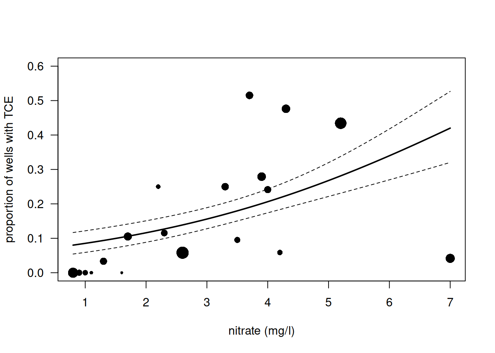
e. The “50 % dose”:
dose.p(fm3, p = 0.5) Dose SE
p = 0.5: 7.944572 0.7761761range(wells$nitrate)[1] 0.8 7.0Half of the wells are predicted to be contaminated at a nitrate concentration of about 7.9 mg/l (SE 0.8). But the highest observed concentration is 7.0 mg/l, and at that concentration only about 40 % of the wells are contaminated (with one area far below the curve). The estimate is an extrapolation beyond the range of the data: it relies on the logistic curve continuing to rise in the same way, which the data cannot confirm. In the bioassay example of Dormann the LD\(_{50}\) lay in the middle of the concentration range, which is why it was trustworthy there.
f. A categorical predictor in a binomial GLM:
fm3s <- glm(cbind(y, n - y) ~ sewer, data = wells, family = binomial)
coef(summary(fm3s)) Estimate Std. Error z value Pr(>|z|)
(Intercept) -2.884180 0.2422006 -11.90823 1.072343e-32
seweryes 2.142242 0.2709669 7.90592 2.659618e-15c(p_unsewered = plogis(coef(fm3s)[1]),
p_sewered = plogis(sum(coef(fm3s))))p_unsewered.(Intercept) p_sewered
0.05294118 0.32258065 pooled <- aggregate(cbind(y, n) ~ sewer, data = wells, sum)
pooled$proportion <- pooled$y / pooled$n
pooled sewer y n proportion
1 no 18 340 0.05294118
2 yes 100 310 0.32258065The back-transformed intercept, 0.053, is exactly the pooled proportion of contaminated wells in unsewered areas (18 of 340), and the back-transformed sum, 0.323, is the pooled proportion in sewered areas (100 of 310). With a single two-level factor, the GLM simply reproduces the two observed proportions — just as in the smokers example (Dormann, Sect. 7.3.2).
tab <- cbind(contaminated = pooled$y, clean = pooled$n - pooled$y)
rownames(tab) <- pooled$sewer
tab contaminated clean
no 18 322
yes 100 210chisq.test(tab)
Pearson's Chi-squared test with Yates' continuity correction
data: tab
X-squared = 77.542, df = 1, p-value < 2.2e-16Both tests find an overwhelmingly significant difference (\(p \approx 10^{-15}\) for the GLM, \(p \approx 10^{-18}\) for the \(\chi^2\) test). The numbers are not identical because the two tests use different approximations (a \(z\)-test on a log-odds ratio versus a \(\chi^2\) test on counts), but they answer the same question and agree in every practical sense. The \(\chi^2\) test is a special case of the binomial GLM.
Exercise 4
The classic species–area relationship states that the number of species \(S\) on an island grows with the island’s area \(A\) as a power law: \(S = c A^z\). The gala data set gives the number of plant species on 29 Galápagos islands.
- Plot
SpeciesagainstArea, and then againstlog(Area). Which plot is more useful, and why? - Show, by taking the logarithm of both sides of \(S = c A^z\), that the power law is a linear model on the log scale with predictor \(\log A\). Which family and link in
glm()fit exactly this model without transforming the response? - Fit
glm(Species ~ log(Area), family = poisson). Read \(z\) directly from the output and calculate \(c\). Is \(z\) in the range 0.2–0.35 that is typical for islands? - Calculate the ratio residual deviance / residual degrees of freedom. What do you conclude, and what does it mean for the standard errors and p-values in the Poisson output?
- Refit with
glm.nb(). Compare the estimates of \(z\), their standard errors, and the AIC of the two models. Draw both fitted curves on the plot ofSpeciesagainstlog(Area). - A third option, common in older literature, is
lm(log(Species) ~ log(Area)). Fit it and compare its \(z\) with the other two. Explain why the AIC of this model cannot be compared with the AICs from (e) (Dormann, Sect. 7.2.2), and what the model assumes about the noise that the Poisson and negative binomial models do not.
Answer
a. Two plots:
par(mfrow = c(1, 2))
plot(Species ~ Area, data = gala, pch = 16, las = 1, xlab = "area (km²)")
plot(Species ~ log(Area), data = gala, pch = 16, las = 1, xlab = "log(area)")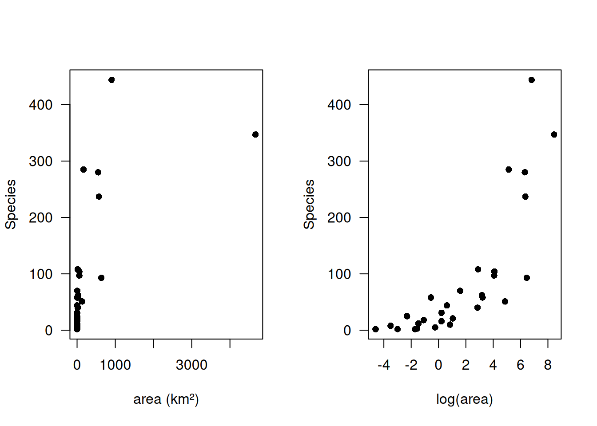
Island areas span five orders of magnitude (0.01 to 4700 km²), so on the linear scale almost all islands are squashed against the y-axis and two large islands dominate. On the log scale the islands are spread out evenly and the relationship becomes visible. The log of the predictor is the useful scale here.
b. Taking logarithms of \(S = cA^z\) gives \[\ln S = \ln c + z \ln A,\] a straight line in \(\ln A\) with intercept \(\ln c\) and slope \(z\). This is exactly a model with a log link for the mean of \(S\) and predictor \(\log(A)\). Since \(S\) is a count, the natural family is poisson (whose canonical link is the log): glm(Species ~ log(Area), family = poisson). The response itself is not transformed; only its expected value is modelled on the log scale.
c. Fitting:
fm4p <- glm(Species ~ log(Area), data = gala, family = poisson)
coef(summary(fm4p)) Estimate Std. Error z value Pr(>|z|)
(Intercept) 3.2409698 0.043050230 75.28345 0
log(Area) 0.3429906 0.007346425 46.68809 0c(z = coef(fm4p)[2], c = exp(coef(fm4p)[1])) z.log(Area) c.(Intercept)
0.3429906 25.5584970 \(z =\) 0.343 and \(c = e^{\beta_0} =\) 25.6 species for an island of 1 km². The exponent is well within the typical island range of 0.2–0.35.
d. Dispersion:
deviance(fm4p) / df.residual(fm4p)[1] 23.7118A residual deviance per degree of freedom of about 24 is enormous: the species counts vary around the fitted curve far more than a Poisson distribution allows — islands differ in much more than area (elevation, isolation, habitat diversity). The Poisson standard errors (0.007 for \(z\)!) are therefore wildly too small and the \(z\)-values (47) and p-values (0) are meaningless.
e. Negative binomial:
fm4nb <- glm.nb(Species ~ log(Area), data = gala)
coef(summary(fm4nb)) Estimate Std. Error z value Pr(>|z|)
(Intercept) 3.1495864 0.14035397 22.44031 1.591359e-111
log(Area) 0.3669952 0.03596514 10.20419 1.898911e-24c(theta = fm4nb$theta, AIC_poisson = AIC(fm4p), AIC_negbin = AIC(fm4nb)) theta AIC_poisson AIC_negbin
2.634311 800.026632 273.992627 Anew <- seq(min(log(gala$Area)), max(log(gala$Area)), length = 100)
plot(Species ~ log(Area), data = gala, pch = 16, las = 1, xlab = "log(area)")
lines(Anew, predict(fm4p, newdata = data.frame(Area = exp(Anew)), type = "response"), lwd = 2)
lines(Anew, predict(fm4nb, newdata = data.frame(Area = exp(Anew)), type = "response"), lwd = 2, lty = 2)
legend("topleft", c("Poisson", "negative binomial"), lty = 1:2, lwd = 2, bty = "n")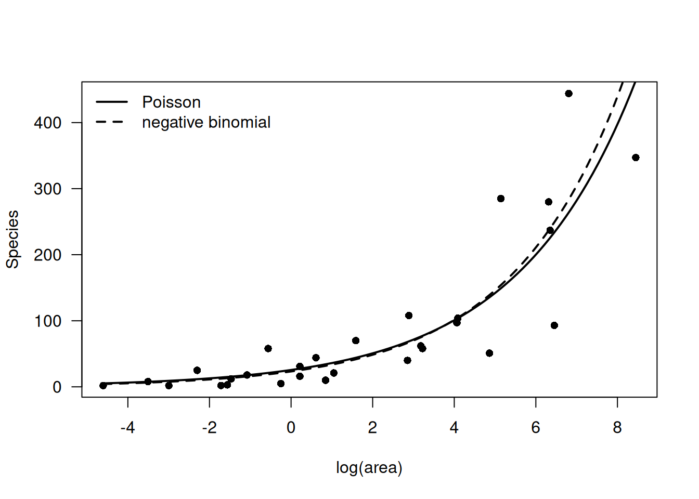
The two estimates of \(z\) (0.34 and 0.37) are similar and the curves almost coincide, but the standard error of \(z\) is five times larger under the negative binomial model (0.036 instead of 0.007) — that is the honest uncertainty. The AIC drops by several hundred units, so the negative binomial model is far better. The Poisson curve is pulled slightly more towards the large islands, because under a Poisson distribution the large counts are assumed to be very precise and therefore get more weight.
f. Log-transformed response:
fm4lm <- lm(log(Species) ~ log(Area), data = gala)
coef(summary(fm4lm)) Estimate Std. Error t value Pr(>|t|)
(Intercept) 2.8338361 0.15708986 18.039587 1.368653e-16
log(Area) 0.4042697 0.04120598 9.810947 2.134924e-10rbind(Poisson = coef(fm4p), negbin = coef(fm4nb), lm_log = coef(fm4lm)) (Intercept) log(Area)
Poisson 3.240970 0.3429906
negbin 3.149586 0.3669952
lm_log 2.833836 0.4042697The linear model on \(\ln S\) gives \(z = 0.40\), somewhat larger, and a smaller intercept. Its AIC (70.1) looks much better than the others, but this is an illusion: the likelihood of fm4lm is calculated for the transformed data \(\ln S\), whereas the other two are calculated for the counts \(S\) themselves. Likelihoods, and therefore AICs, can only be compared between models of the same response (Dormann, Sect. 7.2.2, the butterfly example). The log-normal model also assumes something different about the noise: that the scatter around the curve is symmetric and of constant size on the log scale, i.e. multiplicative on the original scale, so that its fitted curve describes the median rather than the mean number of species (see also Exercise 7). The Poisson and negative binomial models describe the mean of the counts directly, and the negative binomial estimates how the variance grows with the mean.
Exercise 5
In this exercise we calculate the Poisson regression of Exercise 1 by hand, following Dormann, Sect. 8.2.1. Take RIKZdat again, with Richness as the response and NAP as the predictor.
- Write a function
llfun(parms)that takes a vector of two parameters (\(\beta_0\), \(\beta_1\)), calculates \(\lambda_i = e^{\beta_0 + \beta_1 \mathrm{NAP}_i}\) for every station and returns the sum ofdpois(Richness, lambda, log = TRUE). Test it withllfun(c(1, 0))and withllfun(c(1.8, -0.5)). Which of the two is more plausible? - Fix \(\beta_0\) at 1.8 and calculate the log-likelihood for a sequence of 100 values of \(\beta_1\) between \(-1.5\) and \(0.5\) (a
forloop orsapply()). Plot the result. This is a likelihood profile. Read off the best \(\beta_1\) withwhich.max(). - Now do the same on a grid of 100 × 100 combinations of \(\beta_0\) (between 1 and 2.5) and \(\beta_1\) (between \(-1.5\) and 0.5), store the values in a matrix and show it with
contour(). Find the best combination withwhich(..., arr.ind = TRUE). Describe the shape of the contours: are the two parameters independent? - Let
optim()do the work: maximisellfunstarting fromc(1, 0)(rememberfnscale = -1and ask for thehessian). Compareop$parandop$valuewith the coefficients andlogLik()of the GLM from Exercise 1. Did the optimiser converge? - Calculate the standard errors from the Hessian with
sqrt(diag(solve(-op$hessian)))and compare them with the standard errors in the GLM summary (Dormann, Side Note 6). - Why does the likelihood surface in (c) have its maximum at an intercept that is not the log of the mean richness? What would the intercept be if you centred
NAPfirst (NAP - mean(NAP))? Check it.
Answer
a. The likelihood function is the heart of the analysis: it is the model.
llfun <- function(parms) {
lambda <- exp(parms[1] + parms[2] * RIKZdat$NAP)
sum(dpois(RIKZdat$Richness, lambda = lambda, log = TRUE))
}
c(llfun(c(1, 0)), llfun(c(1.8, -0.5)))[1] -216.2582 -127.8999For every station the function calculates the expected richness \(\lambda_i\) from the parameters, then the log-probability of the observed count under a Poisson distribution with that \(\lambda_i\), and sums. The second parameter combination has a much higher log-likelihood (−107 versus −167) and is therefore far more plausible.
b. The likelihood profile for the slope:
beta1 <- seq(-1.5, 0.5, length = 100)
ll <- numeric(100)
for (i in 1:100) ll[i] <- llfun(c(1.8, beta1[i]))
plot(beta1, ll, type = "l", lwd = 2, las = 1,
xlab = expression(beta[1]), ylab = "log-likelihood")
abline(v = beta1[which.max(ll)], lty = 2)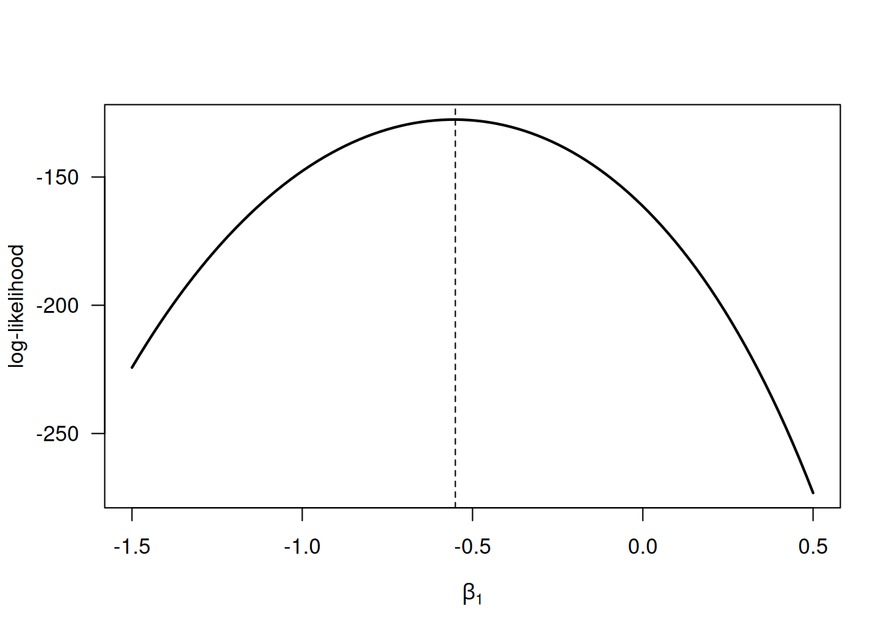
beta1[which.max(ll)][1] -0.5505051With the intercept fixed at 1.8 the best slope is about −0.56.
c. The likelihood surface:
beta0 <- seq(1, 2.5, length = 100)
beta1 <- seq(-1.5, 0.5, length = 100)
ll.m <- matrix(NA, nrow = 100, ncol = 100)
for (i in 1:100) {
for (j in 1:100) {
ll.m[i, j] <- llfun(c(beta0[i], beta1[j]))
}
}
contour(beta0, beta1, ll.m, nlevels = 40, las = 1,
xlab = expression(beta[0]), ylab = expression(beta[1]))
best <- which(ll.m == max(ll.m), arr.ind = TRUE)
points(beta0[best[1]], beta1[best[2]], pch = 16, col = "red")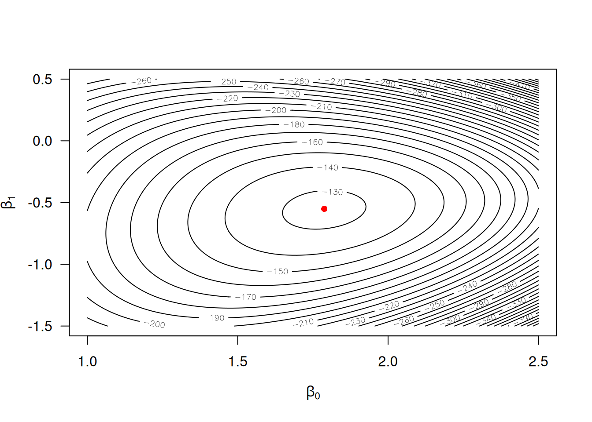
c(beta0 = beta0[best[1]], beta1 = beta1[best[2]], loglik = max(ll.m)) beta0 beta1 loglik
1.7878788 -0.5505051 -127.5951913 The contours are elongated ellipses, tilted: a larger intercept goes together with a more negative slope. The two parameters are not independent — they are negatively correlated, as is almost always the case for an intercept and a slope (Dormann, Fig. 8.7). This is why we must optimise both at the same time rather than one after the other.
d. Optimisation:
op <- optim(par = c(1, 0), fn = llfun, control = list(fnscale = -1),
method = "BFGS", hessian = TRUE)
op$par; op$value; op$convergence[1] 1.7909969 -0.5559736[1] -127.5904[1] 0rbind(optim = op$par, glm = coef(fm1)) (Intercept) NAP
optim 1.790997 -0.5559736
glm 1.790997 -0.5559735c(optim = op$value, glm = logLik(fm1)) optim glm
-127.5904 -127.5904 optim() finds the same coefficients as glm() to four decimals, the same maximum log-likelihood, and convergence = 0 tells us that it converged. glm() uses a different algorithm (iteratively re-weighted least squares) but maximises the same likelihood, so it must arrive at the same place.
e. Standard errors from the Hessian:
rbind(optim = sqrt(diag(solve(-op$hessian))),
glm = coef(summary(fm1))[, "Std. Error"]) (Intercept) NAP
optim 0.06329338 0.07163200
glm 0.06329337 0.07163199The Hessian is the matrix of second derivatives at the maximum; its (negative) inverse is the variance-covariance matrix of the estimates, and the square roots of its diagonal are the standard errors. They agree with the GLM output to three decimals.
f. The intercept is the log of the expected richness at NAP = 0, not at the mean NAP. Since the mean NAP is not 0 (it is 0.348), the intercept is not the log of the mean richness (1.739). If we centre the predictor, NAP = 0 becomes the average station:
RIKZdat$NAPc <- RIKZdat$NAP - mean(RIKZdat$NAP)
fm1c <- glm(Richness ~ NAPc, data = RIKZdat, family = poisson)
c(intercept_centred = coef(fm1c)[1], log_mean_richness = log(mean(RIKZdat$Richness)))intercept_centred.(Intercept) log_mean_richness
1.597691 1.738515 Now the intercept is close to the log of the mean richness (exactly equal only if the relationship were flat; with a curved fit the mean of \(\lambda_i\) is slightly larger than \(\lambda\) at the mean \(x\)). The slope is unchanged by centring.
Exercise 6
Some relationships are not linear on any link scale. In beepollen, Harder and Thomson (1989) measured the proportion of a flower’s pollen that a bee removed (removed) as a function of how long it stayed at the flower (duration, s). A bee cannot remove more than all of the pollen, so we expect the curve to level off.
- Plot
removedagainstduration. Fit a straight line with a gaussian GLM and draw it. Where does the line go wrong, and what would it predict for a visit of 200 s? - A saturating alternative is the Michaelis–Menten function \(y = \dfrac{a\,x}{b + x}\) (Dormann, Sect. 8.2.2). What is the meaning of \(a\), and of \(b\)? Sketch (or reason out) what the curve looks like for \(a = 0.9\) and \(b = 15\).
- Write a likelihood function for the model \(\mathrm{removed} \sim N\!\left(\mu = \dfrac{a\,\mathrm{duration}}{b + \mathrm{duration}},\ \sigma\right)\) with a named parameter vector
c(a = , b = , logsigma = ). Why do we estimate \(\log \sigma\) rather than \(\sigma\) itself? Test the function withc(a = 0.9, b = 15, logsigma = -2). - Maximise it with
optim(..., method = "BFGS", hessian = TRUE). Report \(\hat a\), \(\hat b\) and \(\hat\sigma\) with their standard errors, and use \(\hat a/\mathrm{SE}(\hat a)\) etc. as \(t\)-values to judge which parameters differ significantly from 0. Draw the fitted curve on the plot withcurve(). - Calculate the AIC of this model by hand from
op$value(how many parameters?) and compare it withAIC()of the straight line from (a). Which model is better, and by how much? - The data contain queens and workers (
queen). Extend the likelihood function so that \(a\) differs between the two castes (e.g. \(a = a_0 + a_1 \cdot \mathrm{queen}\)) and refit. Do queens remove more pollen than workers in the limit of long visits? Judge this from the estimate and standard error of \(a_1\) and from the AIC.
Answer
a. A straight line:
plot(removed ~ duration, data = beepollen, pch = 16, las = 1,
xlab = "visit duration (s)", ylab = "proportion of pollen removed")
fm6lin <- glm(removed ~ duration, data = beepollen, family = gaussian)
abline(fm6lin, lwd = 2, col = "grey40")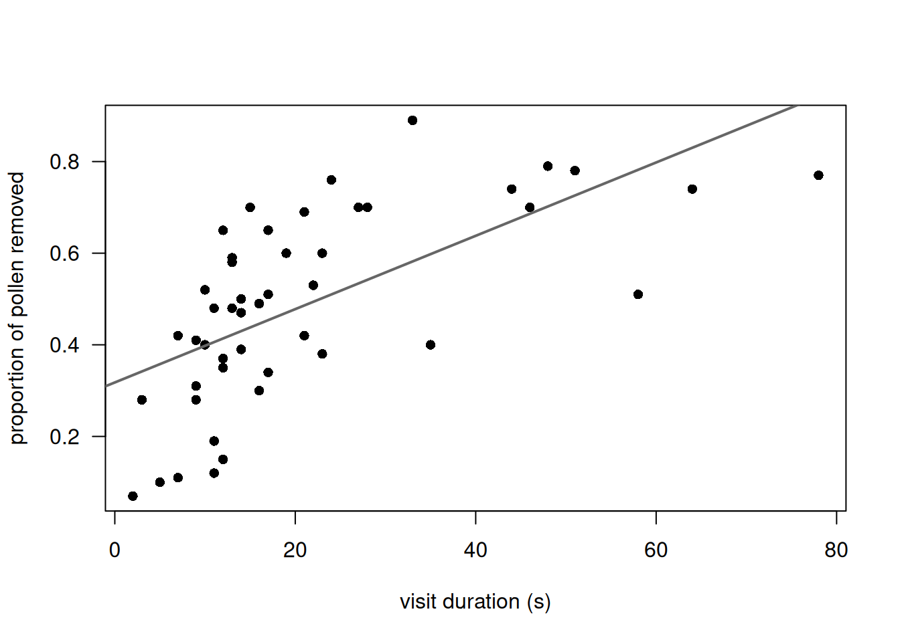
coef(fm6lin)(Intercept) duration
0.317850710 0.008003029 predict(fm6lin, newdata = data.frame(duration = 200)) 1
1.918456 The line is too low for short visits (up to about 20 s the removal rises steeply) and too high for the longest visits, where the points level off. For a 200 s visit it predicts that 1.92 of the pollen is removed — 190 % — which is impossible: a proportion cannot exceed 1.
b. In \(y = a x /(b + x)\), \(a\) is the asymptote: as \(x \to \infty\), \(y \to a\), so \(a\) is the maximum proportion of pollen a bee can remove. \(b\) is the half-saturation duration: at \(x = b\), \(y = a b/(2b) = a/2\). For \(a = 0.9\) and \(b = 15\) the curve starts at 0, rises steeply (initial slope \(a/b = 0.06\) per second), reaches 0.45 at 15 s, 0.72 at 60 s and approaches 0.9 for very long visits.
c. The likelihood function:
llmm <- function(parms) {
mu <- parms["a"] * beepollen$duration / (parms["b"] + beepollen$duration)
sum(dnorm(beepollen$removed, mean = mu, sd = exp(parms["logsigma"]), log = TRUE))
}
llmm(c(a = 0.9, b = 15, logsigma = -2))[1] 25.9865The standard deviation must be positive. If we optimised \(\sigma\) directly, optim() might try a negative value, dnorm() would return NaN, and the optimisation would crash. By estimating \(\log\sigma\) instead, any real number the optimiser tries is turned into a positive \(\sigma\) by exp(). This is the same trick as a link function.
d. Optimisation:
op6 <- optim(par = c(a = 0.9, b = 15, logsigma = -2), fn = llmm,
control = list(fnscale = -1), method = "BFGS", hessian = TRUE)
op6$convergence[1] 0se6 <- sqrt(diag(solve(-op6$hessian)))
cbind(estimate = op6$par, SE = se6, t = op6$par / se6) estimate SE t
a 0.9344272 0.1009051 9.260453
b 14.7664347 3.8343971 3.851045
logsigma -1.9851190 0.1031420 -19.246457exp(op6$par["logsigma"]) logsigma
0.1373643 plot(removed ~ duration, data = beepollen, pch = 16, las = 1,
xlab = "visit duration (s)", ylab = "proportion of pollen removed")
abline(fm6lin, lwd = 2, col = "grey60")
p6 <- op6$par
curve(p6["a"] * x / (p6["b"] + x), add = TRUE, lwd = 2)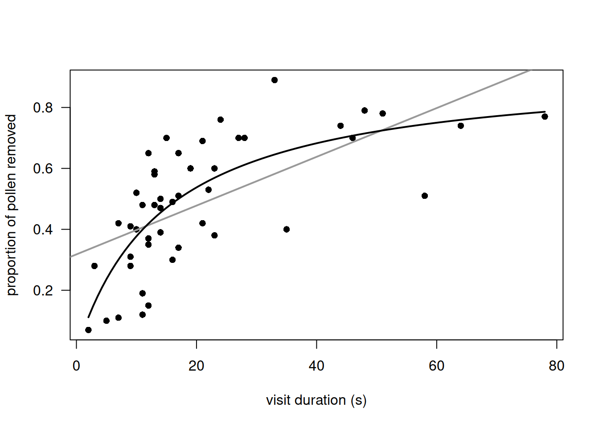
The asymptote is \(\hat a =\) 0.93 (SE 0.1): a bee removes at most about 93 % of the pollen. The half-saturation time is \(\hat b =\) 14.8 s (SE 3.8), and \(\hat\sigma = e^{\widehat{\log\sigma}} =\) 0.137. The \(t\)-values for \(a\) and \(b\) are 9.3 and 3.9, far above the critical value of about 2 (with 44 residual degrees of freedom), so both are clearly different from 0. (The \(t\)-value of \(\log\sigma\) tests whether \(\sigma = 1\), which is not an interesting hypothesis.)
e. AIC by hand: the model has three parameters (\(a\), \(b\), \(\sigma\)), so \(\mathrm{AIC} = -2\ell + 2 \cdot 3\).
c(AIC_MichaelisMenten = -2 * op6$value + 2 * 3,
AIC_line = AIC(fm6lin))AIC_MichaelisMenten AIC_line
-47.22096 -33.50690 The saturating model is better by about 14 AIC units — a large difference, even though both models use three parameters (the line also estimates an intercept, a slope and \(\sigma\)).
f. Separate asymptotes for queens and workers:
llmm2 <- function(parms) {
a <- parms["a0"] + parms["a1"] * beepollen$queen
mu <- a * beepollen$duration / (parms["b"] + beepollen$duration)
sum(dnorm(beepollen$removed, mean = mu, sd = exp(parms["logsigma"]), log = TRUE))
}
op6q <- optim(par = c(a0 = 0.9, a1 = 0, b = 15, logsigma = -2), fn = llmm2,
control = list(fnscale = -1), method = "BFGS", hessian = TRUE)
se6q <- sqrt(diag(solve(-op6q$hessian)))
cbind(estimate = op6q$par, SE = se6q, t = op6q$par / se6q) estimate SE t
a0 0.9293735 0.07776850 11.950513
a1 -0.1978194 0.06544264 -3.022791
b 9.4710946 2.87885538 3.289882
logsigma -2.0566947 0.10314211 -19.940399c(AIC_common_a = -2 * op6$value + 2 * 3,
AIC_separate_a = -2 * op6q$value + 2 * 4) AIC_common_a AIC_separate_a
-47.22096 -51.94913 \(a_1\) is the difference between the asymptote of queens and that of workers. It is negative: \(\hat a_1 =\) -0.2 (SE 0.07, \(t \approx -3\)). Queens do not remove more pollen in the limit — they remove about 20 percentage points less than workers (asymptotes of about 0.73 versus 0.93). The AIC drops by almost 5 units when the extra parameter is added, so the difference is supported by the data.
Exercise 7
The same model can often be fitted in several ways, and they do not give the same answer. Decay contains the amount of a substance (amount) that remains after time units, a textbook case of exponential decay \(y = y_0 e^{-kt}\).
- Plot the data on the normal scale and with a logarithmic y-axis. Which plot shows a straight line, and why?
- Route 1: fit
lm(log(amount) ~ time). Route 2: fitglm(amount ~ time, family = gaussian(link = "log")). Route 3: maximise the log-likelihood of \(\mathrm{amount} \sim N(\mu = e^{\beta_0 + \beta_1 t}, \sigma)\) withoptim(). Collect the estimates of \(\beta_0\) (i.e. \(\ln y_0\)) and \(\beta_1\) (i.e. \(-k\)) from the three routes in one table. - Two of the three routes agree to several decimals. Which two, and why must they agree?
- Route 1 gives a different slope. Write down what each route assumes about the noise: is the scatter added on the log scale or on the original scale, and does it grow with the fitted value or not? Look at the plot from (a) to decide which assumption fits these data better.
- Draw the three fitted curves on the plot of
amountagainsttime. Where do they differ most? Calculate the half-life \(t_{1/2} = \ln 2 / k\) from each route. - For Route 1,
exp(fitted values)gives predictions on the original scale. Explain why these predictions are systematically lower than the mean of the data at a given time (hint: what is the mean of a log-normal distribution?).
Answer
a. Two plots:
par(mfrow = c(1, 2))
plot(amount ~ time, data = Decay, pch = 16, las = 1)
plot(amount ~ time, data = Decay, pch = 16, las = 1, log = "y")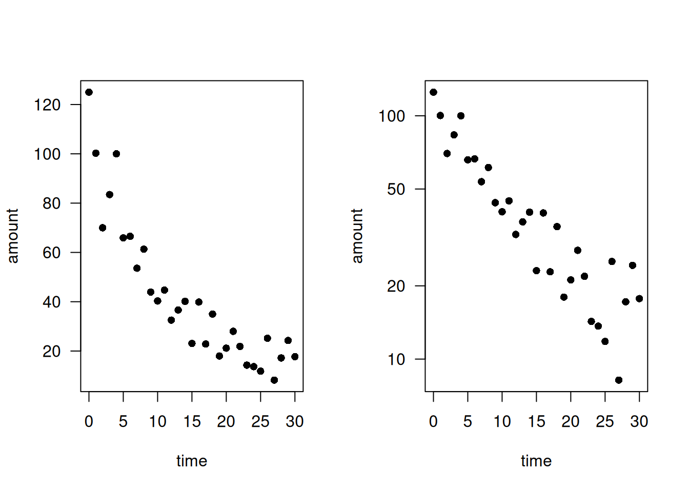
With a logarithmic y-axis the points follow a straight line, because \(\ln y = \ln y_0 - k t\): the exponential becomes linear on the log scale. Note also that the vertical scatter around the line looks roughly constant on the log axis, but shrinks with time on the original axis.
b. Three routes to the same model:
# Route 1: linear model on the log-transformed response
r1 <- lm(log(amount) ~ time, data = Decay)
# Route 2: gaussian GLM with a log link
r2 <- glm(amount ~ time, data = Decay, family = gaussian(link = "log"))
# Route 3: by hand
lldecay <- function(parms) {
mu <- exp(parms[1] + parms[2] * Decay$time)
sum(dnorm(Decay$amount, mean = mu, sd = exp(parms[3]), log = TRUE))
}
r3 <- optim(par = c(4.5, -0.07, 2), fn = lldecay, control = list(fnscale = -1),
method = "BFGS", hessian = TRUE)
estimates <- rbind(lm_log = coef(r1), glm_loglink = coef(r2), optim = r3$par[1:2])
colnames(estimates) <- c("beta0 = ln(y0)", "beta1 = -k")
estimates beta0 = ln(y0) beta1 = -k
lm_log 4.547386 -0.06852845
glm_loglink 4.683386 -0.08018599
optim 4.683463 -0.08019277c. Routes 2 and 3 agree to four decimals. They must agree: they fit exactly the same model — a normal distribution with a mean \(e^{\beta_0 + \beta_1 t}\) and constant standard deviation — by maximum likelihood, only with different optimisation algorithms. Route 1 fits a different model.
d. The three routes assume:
- Route 1 (
lmon \(\ln y\)): \(\ln y \sim N(\beta_0 + \beta_1 t, \sigma)\). The noise is normal on the log scale with constant \(\sigma\). On the original scale this means the noise is multiplicative: \(y = y_0 e^{-kt} \cdot e^{\varepsilon}\), and its absolute size shrinks as the fitted value shrinks. - Routes 2 and 3: \(y \sim N(e^{\beta_0 + \beta_1 t}, \sigma)\). The noise is normal and additive on the original scale, with the same \(\sigma\) whether the fitted value is 120 or 10.
In the left-hand plot of (a) the scatter is clearly larger at the start (amounts around 100 vary by ±20) than at the end (amounts around 10 vary by ±3), while on the log axis it looks about constant. The multiplicative assumption of Route 1 fits these data better. Route 1 also gives less weight to the large early values, which is why its slope is less steep.
e. The fitted curves and half-lives:
tnew <- seq(0, 30, length = 100)
plot(amount ~ time, data = Decay, pch = 16, las = 1)
lines(tnew, exp(coef(r1)[1] + coef(r1)[2] * tnew), lwd = 2, lty = 2)
lines(tnew, exp(coef(r2)[1] + coef(r2)[2] * tnew), lwd = 2)
lines(tnew, exp(r3$par[1] + r3$par[2] * tnew), lwd = 2, lty = 3, col = "red")
legend("topright", c("lm on log(amount)", "glm, log link", "optim"),
lty = c(2, 1, 3), col = c("black", "black", "red"), lwd = 2, bty = "n")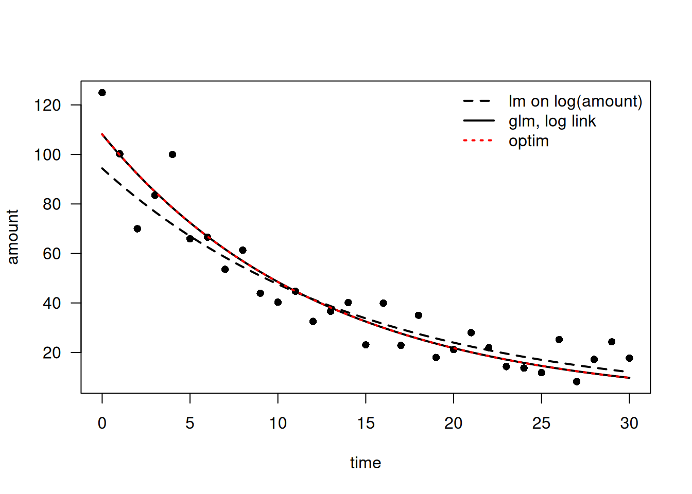
k <- -estimates[, 2]
cbind(k = k, half_life = log(2) / k) k half_life
lm_log 0.06852845 10.114736
glm_loglink 0.08018599 8.644243
optim 0.08019277 8.643512The GLM/optim curve and the log-lm curve differ most at the start (where the GLM curve is higher, \(y_0 = e^{4.68} = 108\) versus \(e^{4.55} = 94\)) and at the end, where the log-lm curve is higher because it decays more slowly. The half-lives are 8.6 (GLM, optim) versus 10.1 time units (log-lm): a difference of more than 15 %, purely from the assumption about the noise.
f. Route 1 models \(\ln y\) as normal, so \(y\) itself is log-normal. The fitted line on the log scale is the mean of \(\ln y\), which back-transforms to the median of \(y\), not its mean. The mean of a log-normal distribution is \(e^{\mu + \sigma^2/2}\) (Dormann, Sect. 3.4), which is always larger than \(e^{\mu}\). So exp(fitted(r1)) under-estimates the mean amount by a factor \(e^{\sigma^2/2}\):
sigma1 <- summary(r1)$sigma
c(sigma = sigma1, correction_factor = exp(sigma1^2 / 2)) sigma correction_factor
0.2859929 1.0417437 Here the bias is small (about 2 %) because \(\sigma\) on the log scale is small, but with noisier data it can be substantial. This is a general lesson: back-transformed predictions from a model of \(\ln y\) are medians.
Exercise 8
In the last exercise we model a distribution parameter other than the mean (Dormann, Sect. 8.4). Black bears in Minnesota were weighed at known ages (beargrowth). Restrict the data to young bears, bears <- subset(beargrowth, age <= 6), for which weight still increases roughly linearly with age.
- Plot
wtkgagainstageand calculate the standard deviation of weight for each age withtapply(). What happens to the spread as the bears get older? Why does this violate the assumption ofglm(wtkg ~ age, family = gaussian)? - Fit that gaussian GLM anyway and note the coefficients, the dispersion parameter and the AIC.
- Write a likelihood function for the model \(\mathrm{wtkg} \sim N\!\big(\mu = a + b\,\mathrm{age},\ \sigma = e^{c + d\,\mathrm{age}}\big)\) with four parameters. Explain the role of the exponential. Test it with
c(20, 10, 2, 0). What does \(d = 0\) correspond to? - Maximise it with
optim()(usemethod = "BFGS",hessian = TRUE; if it fails, change the starting values). Report the four estimates with their standard errors. Is \(d\) significantly different from 0? - Calculate the AIC of the four-parameter model by hand and compare it with the AIC of the model in (b). Are the estimates of \(a\) and \(b\) very different between the two models? Which part of the output does change a lot, and why does that matter for a confidence band?
- Use the fitted values of \(\mu\) and \(\sigma\) to draw, on the plot from (a), the fitted mean line and the lines \(\mu \pm 2\sigma\) as a function of age. Roughly what fraction of the bears should fall between the outer lines? Check it with the data.
Answer
a. The data:
bears <- subset(beargrowth, age <= 6)
plot(wtkg ~ jitter(age, 0.3), data = bears, pch = 16, cex = 0.6, las = 1,
col = adjustcolor("black", 0.4), xlab = "age (years)", ylab = "weight (kg)")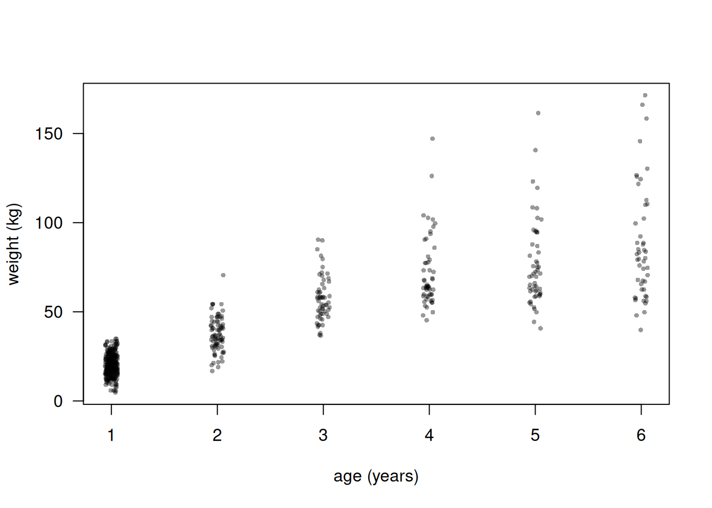
rbind(n = table(bears$age),
mean = round(tapply(bears$wtkg, bears$age, mean), 1),
sd = round(tapply(bears$wtkg, bears$age, sd), 1)) 1 2 3 4 5 6
n 290.0 80.0 58.0 55.0 53.0 48.0
mean 20.1 37.4 57.4 71.7 76.5 87.1
sd 6.3 9.6 12.6 19.8 24.1 31.9The standard deviation grows from 6 kg at age 1 to 32 kg at age 6 — a five-fold increase, roughly in proportion to the mean. A gaussian GLM assumes one \(\sigma\) for all ages (homoscedasticity), so it will overestimate the spread of yearlings and underestimate that of six-year-olds.
b. The ordinary gaussian GLM:
fm8 <- glm(wtkg ~ age, data = bears, family = gaussian)
coef(fm8)(Intercept) age
7.362429 14.347215 c(dispersion = summary(fm8)$dispersion, sigma = sqrt(summary(fm8)$dispersion), AIC = AIC(fm8))dispersion sigma AIC
232.91593 15.26158 4844.51248 c. The likelihood function with a variable standard deviation:
llbear <- function(parms) {
mu <- parms[1] + parms[2] * bears$age
sigma <- exp(parms[3] + parms[4] * bears$age)
sum(dnorm(bears$wtkg, mean = mu, sd = sigma, log = TRUE))
}
llbear(c(20, 10, 2, 0))[1] -3271.096The exponential guarantees that \(\sigma\) is positive for any values of \(c\) and \(d\) — it plays the role of a log link for the standard deviation. With \(d = 0\) the standard deviation is \(e^{c}\) for every age, i.e. the model reduces to the ordinary gaussian regression of (b).
d. Optimisation:
op8 <- optim(par = c(20, 10, 2, 0), fn = llbear, control = list(fnscale = -1),
method = "BFGS", hessian = TRUE)
op8$convergence[1] 0se8 <- sqrt(diag(solve(-op8$hessian)))
res8 <- cbind(estimate = op8$par, SE = se8, t = op8$par / se8)
rownames(res8) <- c("a (intercept mu)", "b (slope mu)", "c (intercept log sigma)", "d (slope log sigma)")
res8 estimate SE t
a (intercept mu) 4.1302788 0.67844301 6.087879
b (slope mu) 16.2344705 0.45015763 36.063969
c (intercept log sigma) 1.5062723 0.05180466 29.076003
d (slope log sigma) 0.3513732 0.01787106 19.661576\(d =\) 0.351 with SE 0.018, \(t \approx 20\): the standard deviation increases very significantly with age, by a factor \(e^{d} =\) 1.42 per year. The fitted standard deviation is \(e^{c + d \cdot \mathrm{age}}\): about 6.4 kg at age 1 and 37.1 kg at age 6, close to the empirical values in (a).
e. Comparison:
c(AIC_constant_sigma = AIC(fm8),
AIC_variable_sigma = -2 * op8$value + 2 * 4)AIC_constant_sigma AIC_variable_sigma
4844.512 4406.390 rbind(glm = coef(fm8), optim = op8$par[1:2]) (Intercept) age
glm 7.362429 14.34722
optim 4.130279 16.23447The AIC drops by more than 400 units: the model with a variable standard deviation is overwhelmingly better. The estimates of the mean line are similar but not identical: the four-parameter model gives the precise yearlings more weight and the noisy six-year-olds less, which shifts the intercept and slope a little. What changes dramatically is the description of the spread: one \(\sigma\) of 15.3 kg versus a \(\sigma\) that runs from about 6 kg at age 1 to 37 kg at age 6. A confidence or prediction band based on the constant-\(\sigma\) model would be far too wide for young bears and too narrow for older ones.
f. The fitted mean and the \(\pm 2\sigma\) envelope:
plot(wtkg ~ jitter(age, 0.3), data = bears, pch = 16, cex = 0.6, las = 1,
col = adjustcolor("black", 0.4), xlab = "age (years)", ylab = "weight (kg)")
agenew <- seq(1, 6, length = 100)
mu_new <- op8$par[1] + op8$par[2] * agenew
sigma_new <- exp(op8$par[3] + op8$par[4] * agenew)
lines(agenew, mu_new, lwd = 2)
lines(agenew, mu_new + 2 * sigma_new, lty = 2)
lines(agenew, mu_new - 2 * sigma_new, lty = 2)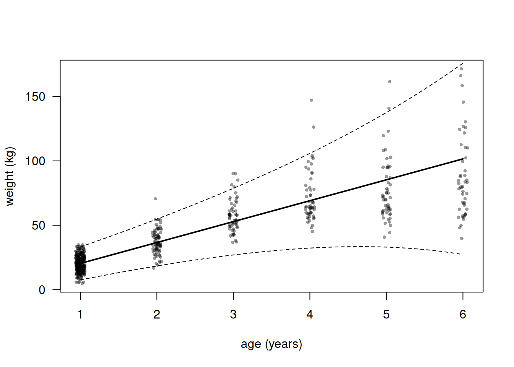
mu_i <- op8$par[1] + op8$par[2] * bears$age
sigma_i <- exp(op8$par[3] + op8$par[4] * bears$age)
mean(abs(bears$wtkg - mu_i) < 2 * sigma_i)[1] 0.9606164For a normal distribution about 95 % of the observations lie within \(\mu \pm 2\sigma\). In the data 96.1 % of the bears fall between the dashed lines, close to the expectation. Note that the envelope is narrow at age 1 and widens steadily — this is a prediction interval for individual bears, and it is only realistic because we modelled \(\sigma\) as a function of age. This is the message of Dormann, Sect. 8.4: with maximum likelihood we can let any parameter of the distribution depend on the predictor, not only the mean.